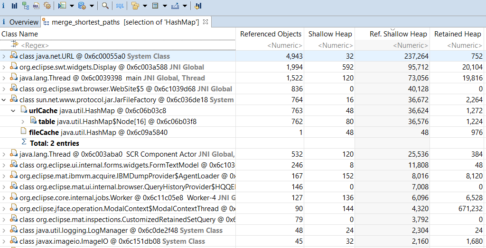

Find out who is keeping alive a set of objects.
Motivation
Having found an expensive object it is then important to find all the reasons it is kept alive.
Explanation
Unlike the Path to GC roots query, this query can operate on multiple objects. However, it only finds the shortest path to GC roots; there may be other paths, but this query does not show them. As it operates on multiple objects there are multiple paths, and the query has the option to merge objects on a path by class. Seeing a common path can be useful in understanding why a set of objects is being kept alive.
Arguments
| Argument | Description |
|---|---|
| objects | Objects for which paths to garbage collection roots should be found. |
| -excludes | Fields of certain classes which should be ignored when finding paths. For example this allows paths through Weak or Soft Reference referents to be ignored. This is of the format class name pattern [: field name [, field name ]*]. Subclasses of the class are also included. If no field names are specified for the class then all fields are excluded. |
| -groupby |
Whether to show:
|
Result
The tree shows objects or sets of objects grouped by class on a path to or from GC roots. The Referenced Objects column shows how many of the objects supplied to this query are on a path through this row.
The context menu allows the objects on this segment of the path, or the referenced objects through this path to be separately examined with other queries.
Merge shortest paths from GC roots  icon
points down and to the right, showing
that the objects or objects of
a line refer via the field in
bold
to the following object or objects in
the tree view which is down and
to the right.
The
Merge from GC Roots on Class
does
not show field names as different objects may refer to
the
following objects by different fields.
icon
points down and to the right, showing
that the objects or objects of
a line refer via the field in
bold
to the following object or objects in
the tree view which is down and
to the right.
The
Merge from GC Roots on Class
does
not show field names as different objects may refer to
the
following objects by different fields.

 icon
points up and to the left, showing
that the object or objects of a
line actually refer
to the preceding objects in
the tree view which is
up and to the left.
icon
points up and to the left, showing
that the object or objects of a
line actually refer
to the preceding objects in
the tree view which is
up and to the left.